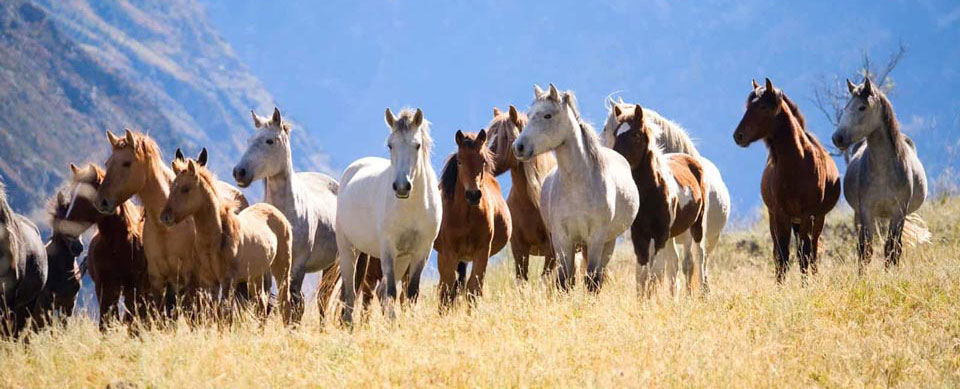

cloud9walkers
Texas Gaited Horse Experience
Who we are
We sell, breed, raise and train gaited horses of every breed: Tennessee Walking Horses, Missouri Foxtrotters, Rocky Mountain Horses, Spotted Mountain Horses, Kentucky Mountain Horses, Paso Finos, Peruvian Pasos, Spotted Saddle Horses . . . We train on the trail, on the highway, on the mountains, in the lake, in the ocean . . . buy with us!
Horses for Sale
Over the past nine years at our family-owned and operated ranch we have developed a top-quality breeding program supplying athletic & healthy American Quarter Horses to individuals and organizations. Through a combination of meticulous genetics, quality feed, vet care, experienced training & handling we cultivate healthy, sound animals fit for many uses. We stand behind our livestock and offer them at competitive prices. Our ranch is certified and we provide all documentation.
Services
Relax your mind and invigorate your spirit with our expertly guided trail rides. Our Riverbed Ride is a placid escape into a little-known part of Hardin, Texas, just north of Houston, in an area filled with fragrant, lush greenery and occasional wildlife viewings. We take riders out seven days a week with the last departure between 4:00 p.m. and 6:00 p.m. depending upon the season and tour. No experience is necessary.